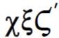
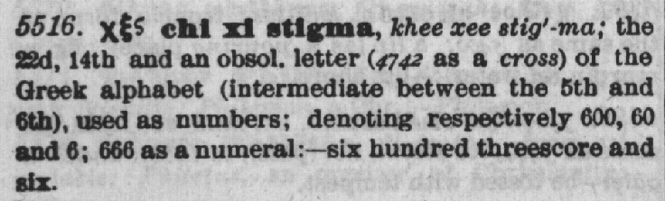
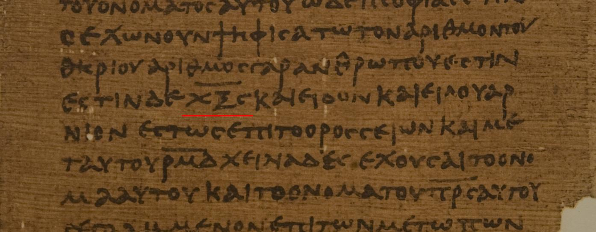
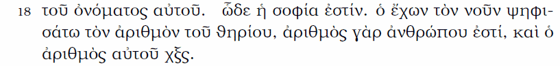
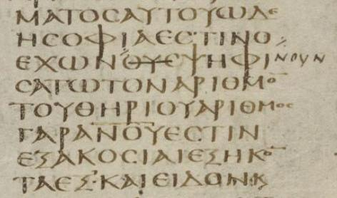
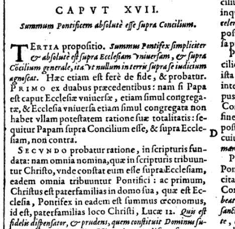

The Contextual Biblical Exegesis Of 666 In Revelation 13:18
We will begin in the book of Daniel, which gives us important information in a repeat and enlarge format regarding the Antichrist that is paralleled in Revelation.
Dan 7:8 I considered the horns, and, behold, there came up among them another little horn, before whom there were three of the first horns plucked up by the roots: and, behold, in this horn were eyes like the eyes of man, and a mouth speaking great things.
Dan 7:19 Then I would know the truth of the fourth beast, which was diverse from all the others, exceeding dreadful, whose teeth were of iron, and his nails of brass; which devoured, brake in pieces, and stamped the residue with his feet;
Dan 7:20 And of the ten horns that were in his head, and of the other which came up, and before whom three fell; even of that horn that had eyes, and a mouth that spake very great things, whose look was more stout than his fellows.Dan 7:25 And he shall speak great words against the most High, ...
Now to Daniel 8 for the parallel there:
Dan 8:9 And out of one of them came forth a little horn, ...
Dan 8:10 And it waxed great, even to the host of heaven; and it cast down some of the host and of the stars to the ground, and stamped upon them.
Dan 8:11 Yea, he magnified himself even to the prince of the host, ...
We continue to the willful king of Daniel 11:
Dan 11:36 And the king shall do according to his will; and he shall exalt himself, and magnify himself above every god, and shall speak marvellous things against the God of gods,
Next to Paul's second epistle to Thessalonica:
2 Th 2:3 Let no man deceive you by any means: for that day shall not come, except there come a falling away first, and that man of sin be revealed, the son of perdition;
2 Th 2:4 Who opposeth and exalteth himself above all that is called God, or that is worshipped; so that he as God sitteth in the temple of God, showing himself that he is God.
The key to understanding this important characteristic of the Antichrist is found in Revelation, where it is very clearly defined for us:
Rev 13:1 And I stood upon the sand of the sea, and saw a beast rise up out of the sea, having seven heads and ten horns, and upon his horns ten crowns, and upon his heads the name of blasphemy.
Note that this "name of blasphemy" is associated with all the heads of the sea beast. The word translated "name" of blasphemy in Rev. 13:1 is onoma:
G3686. onoma, on'-om-ah; from a presumed der. of the base of G1097 (comp. G3685); a "name" (lit. or fig.) [authority, character]:--called, (+ sur-) name (-d).
The same word is translated "name" in the following verse:
Rev 13:6 And he opened his mouth in blasphemy against God, to blaspheme his name, and his tabernacle, and them that dwell in heaven.
Now, who cannot immediately see that in Daniel 7, 8, 11, and 2 Thes. 2:3-4 the great words, the words by which he, the Antichrist, magnifies himself, are blasphemous words, from Revelation 13? The Antichrist is not an open violent opposer of Christ, he is a subtle usurper within the church that is guilty of blasphemy. This "name of blasphemy" of the sea beast is again mentioned in the key verses that are the focus of this discussion:
Rev 13:17 And that no man might buy or sell, save he that had the mark, or the name of the beast, or the number of his name.
Rev 13:18 Here is wisdom. Let him that hath understanding count the number of the beast: for it is the number of a man; and his number is Six hundred threescore and six.
So from the blasphemous name of the beast from the sea, the Antichrist, the number 666 can be counted.
The solution to the enigma:
-
The mark of authority of the papal system is that it thinks to change times and laws of the most high (Dan. 7:25) This is defined clearly in Rev. 14:7 by the first angel's message as the pre-advent judgment and the Sabbath commandment.
-
The blasphemous name of the beast, which is in fact a title, is Vicarius Filii Dei, by which the papal system usurps Christ's authority, claiming for itself the power to dispense with the law of God, or modify it at will. Two commandments of God's law have been altered by the papacy, the second regarding idolatry, and the fourth regarding the seventh day Sabbath. The title clearly reveals the character of the Antichrist, in fact Antichrist and Vicarius Filii Dei are synonymous, they both mean one who takes the place of Christ, a usurper.
-
We are told to find a boastful blasphemous title that yields six hundred sixty six arithmetically. The number six hundred sixty six is the number of his name (arithmos G706 onoma G3686) mentioned in Rev. 13:17,18, and 15:2. The number is not readily apparent from the title, it must be counted or reckoned, as the text clearly indicates.
G706. arithmos, ar-ith-mos'; from G142; a number (as reckoned up):--number.
G3686. onoma, on'-om-ah; from a presumed der. of the base of G1097 (comp. G3685); a "name" (lit. or fig.) [authority, character]:--called, (+ sur-) name (-d).

Strong's Concordance Greek G5516.

Isopsephy (iso meaning "equal" and psephos meaning "pebble") is the Greek equivalent for the Hebrew system called gematria, by which number values of the letters in a word add up to a resulting number. Revelation which was written in Greek, in 13:18 tells the reader to count the number of the beast. There John uses the word psephizo (G5585) for "count", which is derived from G5586, the same Greek word that composes Isopsephy. John was indicating that numerology, counting the numeric value of a name, was the way to arrive at the solution of six hundred sixty six. "Pythagorean sources would indicate that this practice goes back at least six or seven centuries prior to 180 CE (the approximate date that Irenaeus produced his heresiology)". - Source. See Irenaeus below.
G5585. psephizo, psay-fid'-zo; from G5586; to use pebbles in enumeration, i.e. (gen.) to compute:--count.
G5586. psephos, psay'-fos; from the same as G5584; a pebble (as worn smooth by handling), i.e. (by impl. of use as a counter or ballot) a verdict (of acquittal) or ticket (of admission); a vote:--stone, voice.
Below is verse 18 with Chi Xi Stigma (underlined in red) in P47, a third century papyrus in the Chester Beatty collection.

See also: The text of the New Testament: an introduction to the critical editions and to the theory and practice of modern textual criticism, Kurt Aland and Barbara Aland, Wm. B. Eerdmans Publishing, 1995, plate 23, pg. 90.
By the black line above Chi Xi Stigma, an abbreviation is being indicated by the copyist, in this case indicating the characters represent their numerical values, rather than their alphabetic meaning. These each have a different numerical value. They are Chi = 600, Xi = 60, Stigma = 6. Papyrus 47 (P47) is considered to be perhaps the earliest extant copy of any portion of Revelation. Early church fathers within a few years of Revelation being penned were already applying isopsephy (Greek), gematria (Hebrew), or Roman numeral values to solve the riddle.
St. Irenaeus of
Lyons (c. 130-202)
Adversus haereses (inter A.D. 180/199)
Book V, Chapter 30
1. Such, then, being the state of the case, and this number being found in all the most approved and ancient copies [of the Apocalypse], and those men who saw John face to face bearing their testimony [to it]; while reason also leads us to conclude that the number of the name of the beast, [if reckoned] according to the Greek mode of calculation [isopsephy] by the [value of] the letters contained in it, will amount to six hundred and sixty and six; that is, the number of tens shall be equal to that of the hundreds, and the number of hundreds equal to that of the units (for that number which [expresses] the digit six being adhered to throughout, indicates the recapitulations of that apostasy, taken in its full extent, which occurred at the beginning, during the intermediate periods, and which shall take place at the end) ...
Moreover, another danger, by no means trifling, shall overtake those who falsely presume that they know the name of Antichrist. For if these men assume one [number], when this [Antichrist] shall come having another, they will be easily led away by him, as supposing him not to be the expected one, who must be guarded against. ...
2. These men, therefore, ought to learn [what really is the state of the case], and go back to the true number of the name, that they be not reckoned among false prophets. But, knowing the sure number declared by Scripture, that is, six hundred sixty and six, let them await, in the first place, the division of the kingdom into ten; then, in the next place, when these kings are reigning, and beginning to set their affairs in order, and advance their kingdom, [let them learn] to acknowledge that he who shall come claiming the kingdom for himself, and shall terrify those men of whom we have been speaking, having a name containing the aforesaid number, is truly the abomination of desolation. ...3. It is therefore more certain, and less hazardous, to await the fulfillment of the prophecy, than to be making surmises, and casting about for any names that may present themselves, inasmuch as many names can be found possessing the number mentioned; and the same question will, after all, remain unsolved. For if there are many names found possessing this number, it will be asked which among them shall the coming man bear. It is not through a want of names containing the number of that name that I say this, but on account of the fear of God, and zeal for the truth: for the name Evanthas (EUAN QAS) contains the required number, but I make no allegation regarding it. Then also Lateinos (LATEINOS) has the number six hundred and sixty-six; and it is a very probable [solution], this being the name of the last kingdom [of the four seen by Daniel]. For the Latins are they who at present bear rule: ...
Source: http://www.newadvent.org/fathers/0103530.htm or Google books. LATEINOS, "the Latin speaking man", in Greek isopsephy is calculated: Lambda (30), Alpha (1), Tau (300), Epsilon (5), Iota (10), Nu (50), Omikron (70) and Sigma (200), giving a total of six hundred and sixty six.
Irenaeus, while also noting 3 sixes in the first paragraph, and equating that with apostasy, wisely recommends subsequently that no serious attempt be made to solve the riddle until it becomes plainly evident who it should be applied to when the little horn of Daniel 7 is identified, as he has a zeal for the truth and a fear of God. This method will eliminate erroneous results. This methodology is not evident in Herb's video What is 666? He needs to retract it.
Below is verse 18 in the Greek Textus Receptus. Again, as in P47, at the end of the verse we have Chi Xi Stigma, 600 60 6.

Attempts to interpret this based on 6 tripled are erroneous, that is not how it is expressed. The total calculation is the number six hundred sixty six, not 3 sixes. See also this 1841 English Hexpla which has the Greek and 6 English translations. Below is verse 18 in the Codex Alexandrinus. Here the Greek in the bottom line reads hexakosioi (six-hundred) hexakonta (sixty) hex (six). Click the image to see the whole page.
Below is Revelation 13:18 in the Codex
Sinaiticus.
Beginning
on the second line from the bottom it reads
hexakosioi (six-hundred), hexakon
ta (sixty) hex (six) ·

Again it is not expressed as three sixes, but rather six hundred sixty six. The three sixes / imperfect number 6 interpretation is a case of eisegesis, forcing into the text something that simply is not there. The number 666 mathematically is 111 sixes, if you must, not 3, and we are told to count the number of a name, not to discern a symbolic meaning from 6, or from 666. For the next important bit of context in this mystery, we notice this verse:
Rev 19:16 And he hath on his vesture and on his thigh a name written, KING OF KINGS, AND LORD OF LORDS.
The same Greek word onoma is used in that verse for "name". Note that it refers to a Title of Jesus. So Revelation 13:1, 6, 17 and 18 can refer to a blasphemous title assumed by the heads of the sea beast. In the Hebrew of Isaiah we also see a name can be a title:
Isa 9:6 For unto us a child is born, unto us a son is given: and the government shall be upon his shoulder: and his name shall be called Wonderful, Counsellor, The mighty God, The everlasting Father, The Prince of Peace.
The same wisdom that unlocks the name/number of the sea beast is mentioned in Revelation 17:
Rev 17:3 So he carried me away in the spirit into the wilderness: and I saw a woman sit upon a scarlet coloured beast, full of names of blasphemy, having seven heads and ten horns.
So there are many blasphemous titles assumed by the Antichrist, not just the one in particular that adds up to 666.
Rev 17:9 And here is the mind which hath wisdom. The seven heads are seven mountains, on which the woman sitteth.
When all the other characteristics of the Antichrist are listed and examined first, and only then the subsequent addition of what is presented here, this points us directly and unerringly with laser-like precision to the apostate harlot woman (church) seated in Rome, the Roman Catholic Church.
So, now let's let scripture tell us a definition of blasphemy:
John 10:31 Then the Jews took up stones again to stone him.
John 10:32 Jesus answered them, Many good works have I showed you from my Father; for which of those works do ye stone me?
John 10:33 The Jews answered him, saying, For a good work we stone thee not; but for blasphemy; and because that thou, being a man, makest thyself God.
With the above in mind:
ALL OF CHRIST'S SCRIPTURAL NAMES ARE ALSO APPLIED TO THE POPE

Cardinal Robert Bellarmine (1542-1621), a Doctor of the Church, in his Disputationes de controversiis christianae fidei, Adversus hujus temporis Haereticos (Debates on the Christian Controversies of Faith Against Contemporary Heresy), claimed that all the names that Scripture applies to Christ are also to be applied to the Pope. In Volume 2, LIBER SECVUNDUS, De Conciliorum auctoritate (Book 2, The Authority of Councils) we find the following:
CAPVT XVII
Summam Pontificem absolute esse supra Concilium.TERTIA propositio. ...
SECUNDO probatur ratione, in scripturis fundata: nam omnia nomina, quae in scripturis tribuuntur Christo, unde constat eum esse supra Ecclesiam, eadem omnia tribuuntur Pontifici: ac primum, Christus est paterfamilias in domo sua, quae est Ecclesia, Pontifex in eadem, est summus oeconomus, id est, paterfamilias loco Christi, Lucae 12. — Bellarmini, De Conciliorum Auct., Lib. II, Cap. 17, 1608, Paris, Tom. ii. col. 95.CHAPTER 17
The Supreme Pontiff is absolutely above a Council.THIRD proposition: ...
SECOND it is proved by an argument, founded in the scriptures: for all the names, which in the scriptures are applied to Christ, proving him to be above the Church, are in like manner applied to the Pontiff: as first, Christ is head of the family in his own house, which is the Church. The Pontiff is high steward in the same, that is, he is head of the family in the place of Christ, Luke 12:42.Luke 12:42 And the Lord said, Who then is that faithful and wise steward, whom his lord shall make ruler over his household, to give them their portion of meat in due season?
So, among the blasphemous titles of the popes, which the Bible so clearly reveals to be the Antichrist, is there one from which we can count the number 666? Yes, VICARIVS FILII DEI (Taking the place of, or substitute for the Son of God) is a blasphemous title that has a long history of use in Roman Catholic documents, to include official Apostolic Constitutions (papal bulls), and it does equal 666 when the Roman numeral value of the letters are added up. See http://biblelight.net/666.htm for the historical documentation. Whether it ever appeared on a tiara or not is no longer of any importance, although I believe it probably did.
It is also worth noting that Roman Catholics, while denying any "official" standing for VICARIVS FILII DEI, will readily admit that the synonymous VICARIVS CHRISTI is the proper and official papal title (it does not add up to 666). Well, another perfectly valid way of saying VICARIVS CHRISTI is ANTICHRIST, both of which mean "Taking the place of, or a substitute for Christ".
See also: